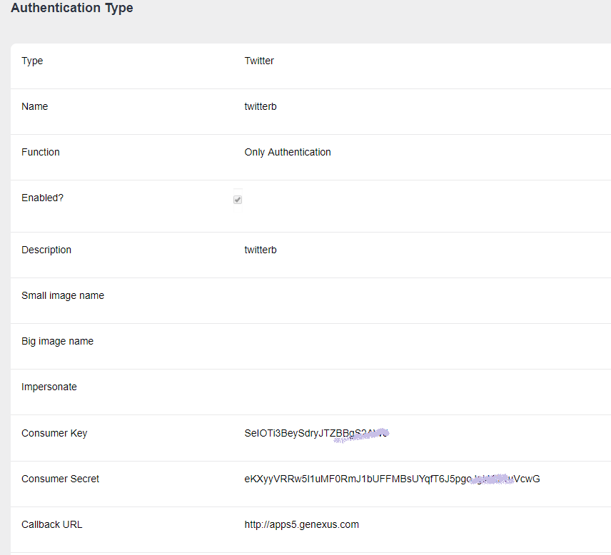

In order to authenticate to Twitter, through GAM just follow these steps.
You need to create a "Twitter application" in Twitter site and obtain Consumer Key and Consumer Secret for that application.
Go to the Application Management page of Twitter for developers (https://apps.twitter.com/) and create a new application, considering the following settings:
Important: Set Callback URL = http://<domain>/oauth/gam/callback
and WEB SITE to your domain (eg.: apps5.genexus.com).
Define "Twitter Authentication Type" using the GAM backend (Authentication Types link).
Enter Consumer Key and Consumer Secret obtained in Twitter developers site.

Important note
About the CallBack URL configuration in GAM backend. You just need to enter the domain of the server running the application.
It isn't necessary to enter the complete site URL, but in case you enter it, do not include the "/servlet" in java.
Twitter Authentication Type can be used in Web Applications and in Native Mobile applications also.
See the GAMExampleLogin objectt for details about how the login is executed.
In the case of Native Mobile applications, you need to add an event in the login object to authenticate using Twitter.
The logic inside the event associated will include a call to a method of Actions external object, named "LoginExternal".
The first parameter is based on the GAMAuthenticationTypes domain, and its value should be "Twitter".
The &User and &password parameters are ignored in this case.
The &LoginExternalAdditionalParameters has an "AuthenticationTypeName" property where you can set the name of the Authentication Type. This is due to the fact that more than one Twitter Authentication Type can be defined in the Repository.
Event 'Twitter'
Composite
&LoginExternalAdditionalParameters.AuthenticationTypeName = !"Twitterb"
GeneXus.SD.Actions.LoginExternal(GAMAuthenticationTypes.Twitter, &User, &Password, &LoginExternalAdditionalParameters)
Return
EndComposite
EndEvent
Another way to program the Twitter login, when you only have one Twitter Authentication Type in the repository, is the following (without passing the &LoginExternalAdditionalParameters):
Event 'Twitter' Composite GeneXus.SD.Actions.LoginExternal(GAMAuthenticationTypes.Twitter, &User, &Password) Return EndComposite EndEvent
See GAM Login Method for details.
It's necessary to configure Twitter consumer Key and Twitter consumer secret properties. See Twitter Consumer Key and Twitter Consumer Secret property using GAM for additional information.
1. Twitter API needs the SITE URL to be public and without any port, so if your application is hosted under port 8080 for example, you need to use any kind of proxy or similar (like Apache web server) in order to use port 80. For more details see the additional information at the bottom of this page.
2. The first time a user logs in to Twitter he will probably need to complete a form where he has to enter his e-mail.
Twitter Consumer Key and Twitter Consumer Secret property using GAM
GAM - Facebook Authentication Type
GAM - Google Authentication Type